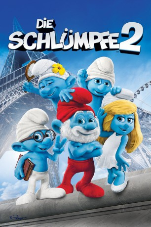

Alternativ: The Smurfs 2
 
 IMDB-Wertung: 5.4 / 10
IMDB-Wertung: 5.4 / 10  Metascore:
Metascore: 
Auch dieses Mal führt der böse Zauberer Gargamel nur Böses mit den Schlümpfen im Schilde. Nachdem er es geschafft hat, in Frankreich von den Einwohnern als mächtigster Zauberer verehrt zu werden, erschuf er einige schlumpfähnliche, jedoch völlig bösartige Geschöpfe, die sogenannten Lümmel. Mit ihnen will er die magische Schlumpf-Essenz erlangen. Als Gargamel feststellt, dass er trotzdem einen echten Schlumpf für seinen Plan braucht und Schlumpfine die einzige ist, die den geheimen Zauberspruch kennt, lässt er sie von den beiden Lümmeln Zicki und Hauie nach Paris entführen. Papa Schlumpf, Clumsy, Muffi und Beauty müssen sich beeilen, mit der Hilfe von Patrick Winslow und seiner Frau Grace, ihre Freundin zurückzuholen, bevor sie von den Lümmeln umgedreht wird und diese ihre freche Seite zum Vorschein bringen.
Jahr: 2013
Dauer: 105 Minuten
FSK: 0
Land: USA Studio: Columbia PicturesTonspuren: DTS - ,
Untertitel:
Auflösung: 1080p (1920x1072) Größe: 7086 MB
Genre: Animation/Trick, Abenteuer, Komödie, Familie, Fantasy
Regisseur:  Raja Gosnell
Raja Gosnell
Drehbuch: J. David Stem, David N. Weiss, Jay Scherick, David Ronn, Karey Kirkpatrick
Soundtrack: Heitor Pereira
Darsteller:
 Hank Azaria als Gargamel
Hank Azaria als Gargamel Neil Patrick Harris als Patrick Winslow
Neil Patrick Harris als Patrick Winslow Brendan Gleeson als Victor Doyle
Brendan Gleeson als Victor Doyle Jayma Mays als Grace Winslow
Jayma Mays als Grace Winslow Jacob Tremblay als Blue Winslow
Jacob Tremblay als Blue Winslow Nancy O'Dell als Herself
Nancy O'Dell als Herself Erika Rosenbaum als Pregnant Mom
Erika Rosenbaum als Pregnant Mom Vanessa Matsui als Mother with Camera
Vanessa Matsui als Mother with Camera Patrick Sabongui als Candy Man
Patrick Sabongui als Candy Man Beatrice Rosen als Pregnant Model
Beatrice Rosen als Pregnant Model Christina Ricci als Vexy
Christina Ricci als Vexy Jonathan Winters als Papa Smurf
Jonathan Winters als Papa Smurf J.B. Smoove als Hackus
J.B. Smoove als Hackus George Lopez als Grouchy Smurf
George Lopez als Grouchy Smurf Anton Yelchin als Clumsy Smurf
Anton Yelchin als Clumsy Smurf John Oliver als Vanity Smurf
John Oliver als Vanity Smurf Fred Armisen als Brainy Smurf
Fred Armisen als Brainy Smurf Alan Cumming als Gutsy Smurf
Alan Cumming als Gutsy Smurf Gary Basaraba als Hefty Smurf
Gary Basaraba als Hefty Smurf Adam Wylie als Panicky Smurf
Adam Wylie als Panicky Smurf Joel McCrary als Farmer Smurf
Joel McCrary als Farmer Smurf Kenan Thompson als Greedy Smurf
Kenan Thompson als Greedy Smurf Shaquille O'Neal als Smooth Smurf
Shaquille O'Neal als Smooth Smurf B.J. Novak als Baker Smurf
B.J. Novak als Baker Smurf Paul Reubens als Jokey Smurf
Paul Reubens als Jokey Smurf Jimmy Kimmel als Passive-Aggressive Smurf
Jimmy Kimmel als Passive-Aggressive Smurf Mario Lopez als Social Smurf
Mario Lopez als Social Smurf John Kassir als Crazy Smurf
John Kassir als Crazy Smurf Tom Kane als Narrator Smurf
Tom Kane als Narrator Smurf Frank Welker als Azrael
Frank Welker als Azrael Youssef Hajdi als Bell Man , uncredited
Youssef Hajdi als Bell Man , uncredited Alex Martin als Ejected French Fan , uncredited
Alex Martin als Ejected French Fan , uncreditedDatei: X:\Kinder Collections\Schlümpfe\Schlümpfe 2, Die (2013, FSKo.Al., 1920x1072) 3D.mkv seit 16.03.2015
Festplatte: Kinder-Filme+Trick
 Es gibt insgesamt 9 Filme in der Gruppe 'Kinder Collections\Schlümpfe'
Es gibt insgesamt 9 Filme in der Gruppe 'Kinder Collections\Schlümpfe'